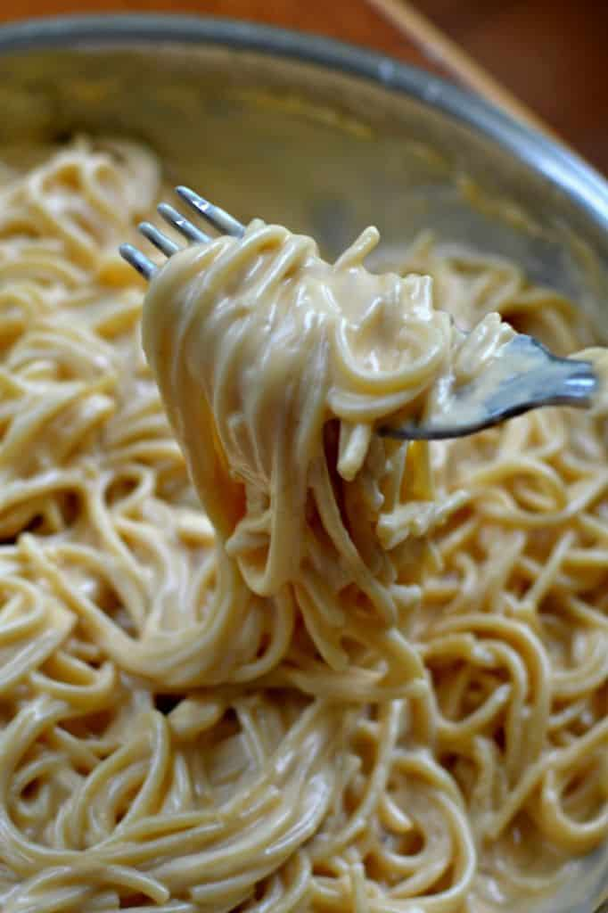

Spaghetti and Milk

Description
Spaghetti and Milk is a simple but amazing comfort food. It is best enjoyed on a cold winter day infront of the TV.
Ingredients
- Spaghetti
- Butter
- Salt
- Pepper
- American Cheese
- Milk
Directions
- Fill pot with water and bring to boil
- Add spaghetti to boiling water. Reduce heat to simmer and let noodles cook to desired tenderness.
- Strain noodles from water and return noodles to empty pot.
- Add milk to pot until noodles are covered
- Add butter to pot and let melt
- Add salt and pepper to taste.
- Rip up american cheese and put it on the botton of the serving bowl.
- Pour hot spaghetti and milk in bowl
- Enjoy!
Back to Home